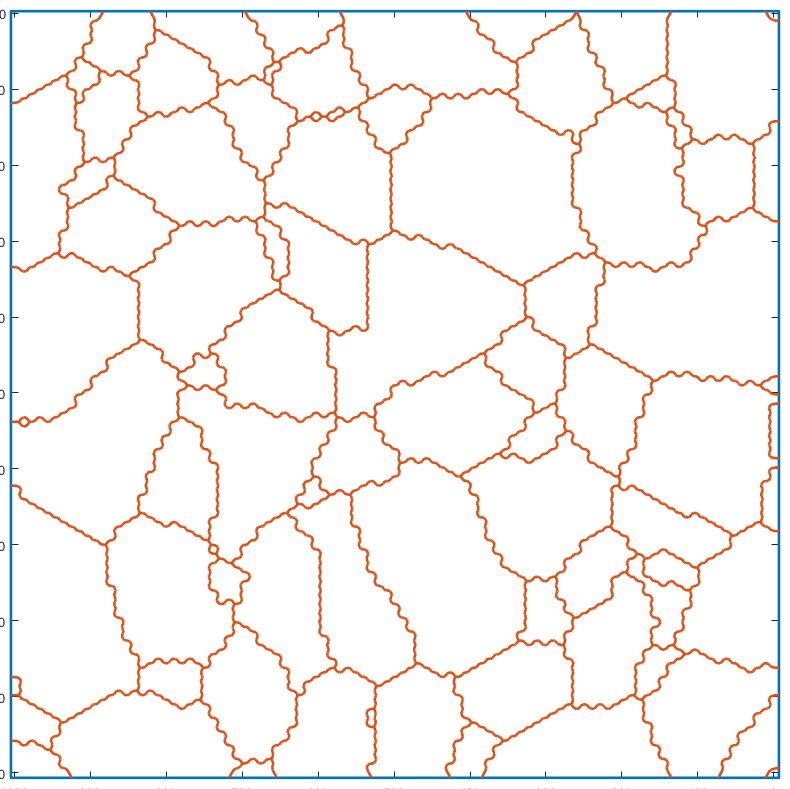

Contents
Load example data
Load EBSD data consisting in an hegagonal grid, then compute the grains.
mtexdata titanium
grains = calcGrains(ebsd);
plot(grains,grains.meanOrientation)
TITANIUM data loaded in variables
'ebsd'
ebsd = EBSD (<a href="matlab:docmethods(ebsd)">show methods</a>, <a href="matlab:plot(ebsd)">plot</a>)
Phase Orientations Mineral Color Symmetry Crystal reference frame
0 8100 (100%) Titanium (Alpha) light blue 622 X||a, Y||b*, Z||c
Properties: ci, grainid, iq, sem_signal, x, y
Scan unit : um
I'm going to colorize the orientation data with the
standard MTEX colorkey. To view the colorkey do:
oM = ipfColorKey(ori_variable_name)
plot(oM)
Compute the serrated geometry
As you can see, the grain boundaries are heavily serrated because of the hexagonal grid used for EBSD indexing. This drawback obviously also apply when constructing the gmshGeo object (despite the smoothing property of the BSpline approximation). Indeed:
G=gmshGeo(grains); plot(G);
Smoothing the grain boundaries
A conditional smoothing can be applied on the grains boundaries before constructing the gmshGeo instance. This function acts like the smooth function, provided with MTEX, except that it keeps the singular points unchanged (triple junctions, quadruple junctions, boundaries of the ROI etc).
grains_smooth=cond_smooth(grains); plot(grains_smooth,grains_smooth.meanOrientation)
I'm going to colorize the orientation data with the standard MTEX colorkey. To view the colorkey do: oM = ipfColorKey(ori_variable_name) plot(oM)
The resulting geometry is obviously smoother than the original one.
G_smooth=gmshGeo(grains_smooth); plot(G_smooth);
Simplify the geometry
In order to simplify the description of the whole geometry, redundant vertices can be removed using a Douglas–Peucker algorithm , implemented in the simplify method for the gmshGeo class:
G_simple=simplify(G_smooth); plot(G_simple)
As evidenced by the figures above, the differences between the simplified geometry and the original one are barely visible. Still, the number of vertices required for describing all the segments have drastically decreased. For instance, let us plot the number of vertices per segment of boundary, as histograms:
figure n_o=cellfun('length',G.Segments); n_s=cellfun('length',G_smooth.Segments); n_ss=cellfun('length',G_simple.Segments); hist([n_o n_s n_ss]) legend({'Raw','Smoothed', 'Smoothed and simplified'}) xlabel('Number of vertices per segment') ylabel('Frequency')